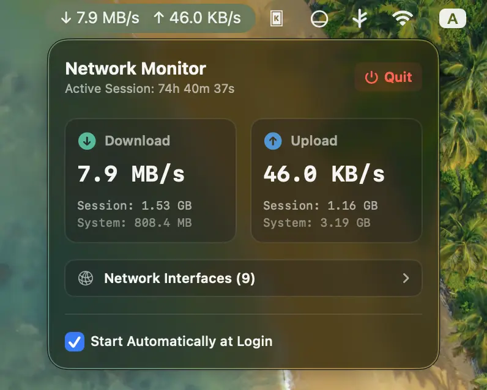

Monitor your connection with real-time clarity
A lightweight menu bar utility built with SwiftUI that shows upload and download speeds at a glance and expands into a premium dashboard with detailed transfer metrics and interface insights.
Minimal by design, powerful when you need it.
Built for everyday monitoring with real-time stats, low CPU usage, and a polished dashboard experience.
Live speeds
Monitor upload and download rates directly in the menu bar, refreshed every second for up-to-date visibility.
Premium dashboard
Open a clean popover dashboard for transfer cards, session statistics, lifetime counters, and active interface details.
Low overhead
Uses Darwin sysctl calls instead of shell-based polling, keeping CPU usage near zero while staying accurate.
Launch at login
Enable automatic startup from the dashboard with macOS app service APIs so monitoring is ready right away.
Glassmorphic UI
The interface blends seamlessly into macOS with polished light and dark mode styling and accent color support.
SwiftPM structure
The project is organized as a clean Swift Package Manager build for straightforward development and contributions.
See the dashboard in action.
Take a closer look at the polished popover experience and the clarity of the information it surfaces.

Install the app from releases
Download the latest packaged macOS build from GitHub Releases and get up and running in seconds.
Open the releases page, choose the latest version, and download NetworkMonitor-macOS.zip.
Double-click the ZIP to extract it, then drag NetworkMonitor.app to your Applications folder.
If Gatekeeper blocks the first launch, follow the steps below to allow the app.
Because the app is unsigned, macOS may warn that it cannot be opened. Click Done, then open System Settings > Privacy & Security and choose Open Anyway.
Build from source
Requires macOS 13.0 or later, Xcode 14.0 or newer, and Swift 5.7+. Build locally with the included project files.
git clone https://github.com/abzgif/mac-network-monitor.git cd mac-network-monitor chmod +x build.sh ./build.sh
open build/NetworkMonitor.app
If Gatekeeper blocks the app, open System Settings → Privacy & Security and allow it to run once.